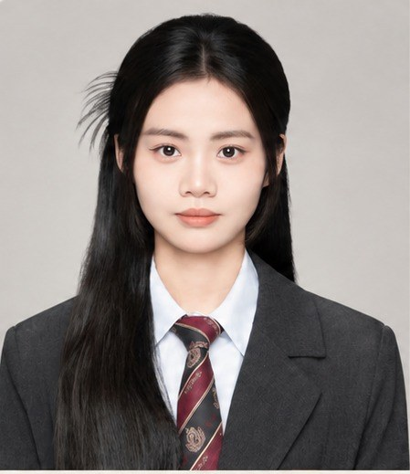

蔡启玲（Kellin）· 27 岁 · 现居广州荔湾

具备新媒体运营、营销策划与市场研究相关经验，能够参与营销方案撰写、图文及视频内容制作、活动执行与数据复盘。熟练使用办公软件、135 编辑器、秀米、PS、剪映等内容生产工具，并能运用 ChatGPT、即梦等 AI 生成工具创造图文及视频辅助内容创作。
三段经历串联起从市场研究、营销策划到新媒体运营的完整能力链。
查看完整工作经历与职责详情 →